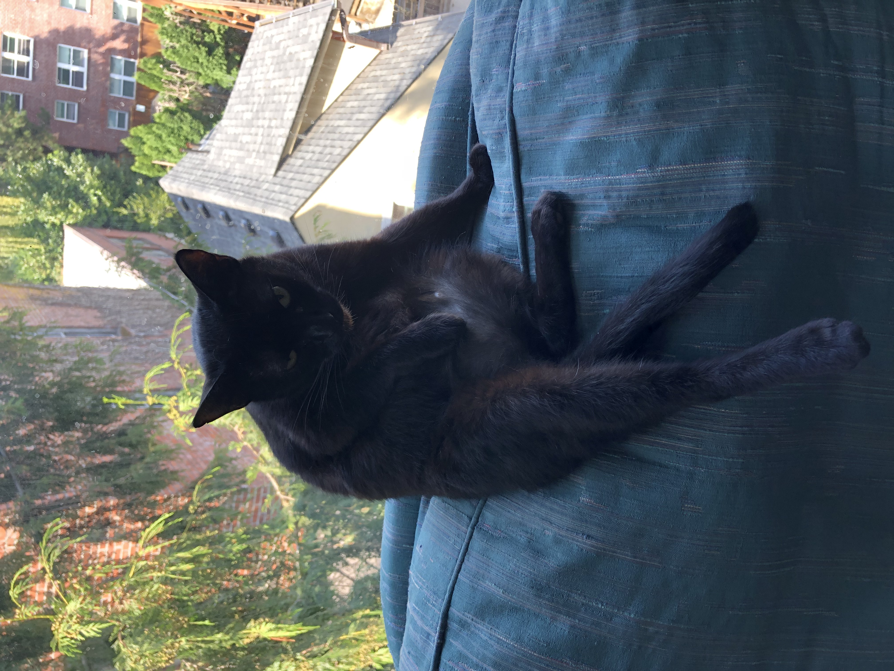

 The top of the world is very different from most other places. There is a large area of water there, and during the darkest parts of the year, this water area gets so cold that a layer of ice grows over its top. Ice can be found any place where the water touches the air and land, so it is a key part of life for the people and animals that live on, under, and around the big ice-covered area.
As the world warms, the big ice-covered area at the top of the world is becoming much smaller. This is causing other changes to the air, water, and land all over the world, but is especially important for those living where the ice is disappearing. In order to know what the changing world will look like down the line, it's important that we learn more about what causes changes to the ice cover now. I work on better understanding a small piece of this big story: I study how the top-of-the-world ice moves around from day to day. Above and under the ice, winds and moving water push and pull on the ice. Winds and water can move the ice to new places, and even cause it to crack open or push it together until it becomes thicker. Moving ice is sometimes pushed against other pieces of ice or against land at the edges of the water area. This strong and quick moving ice can make it hard for people to stay safe when they go to this part of the world. Since it can be hard to visit the ice-covered top of the world in order to study it, I use computers in space that can see this part of the world. From pictures made by the space computers, people who study this area share what's going on there with the ice every day. I use what they show to figure out how wind, water, and land have caused the ice to move and crack in different ways. By figuring out how this has happened so far, we can make better guesses how the ice will continue to move and change tomorrow.